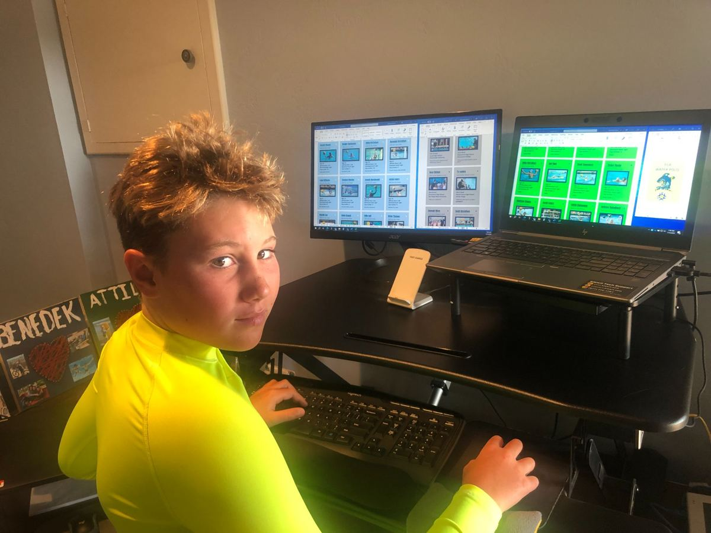
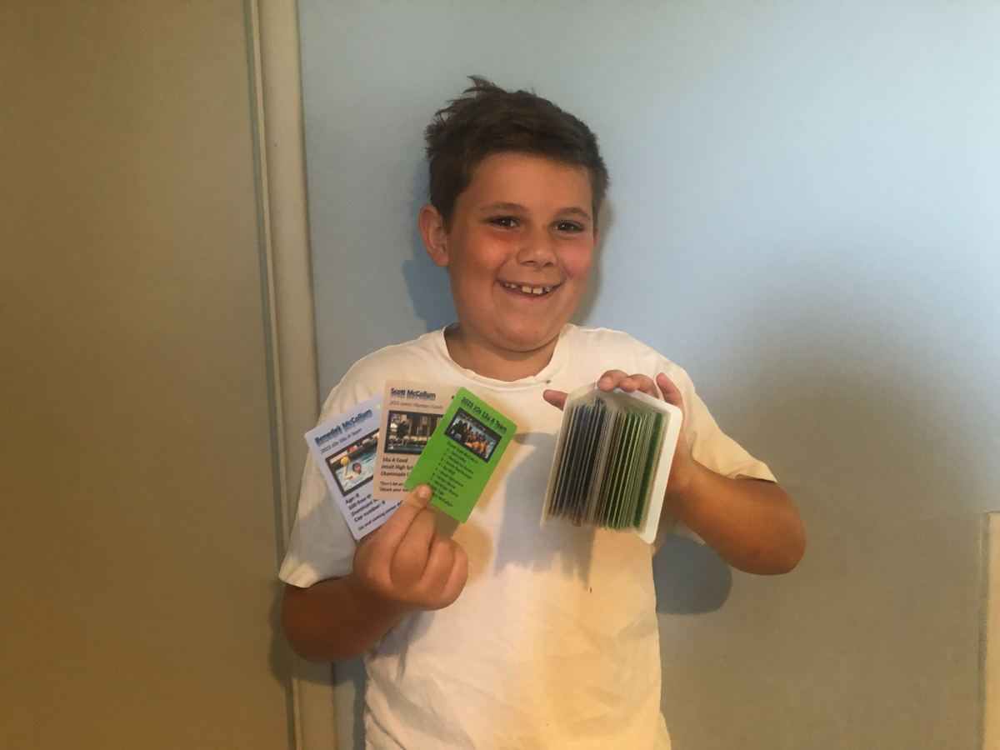
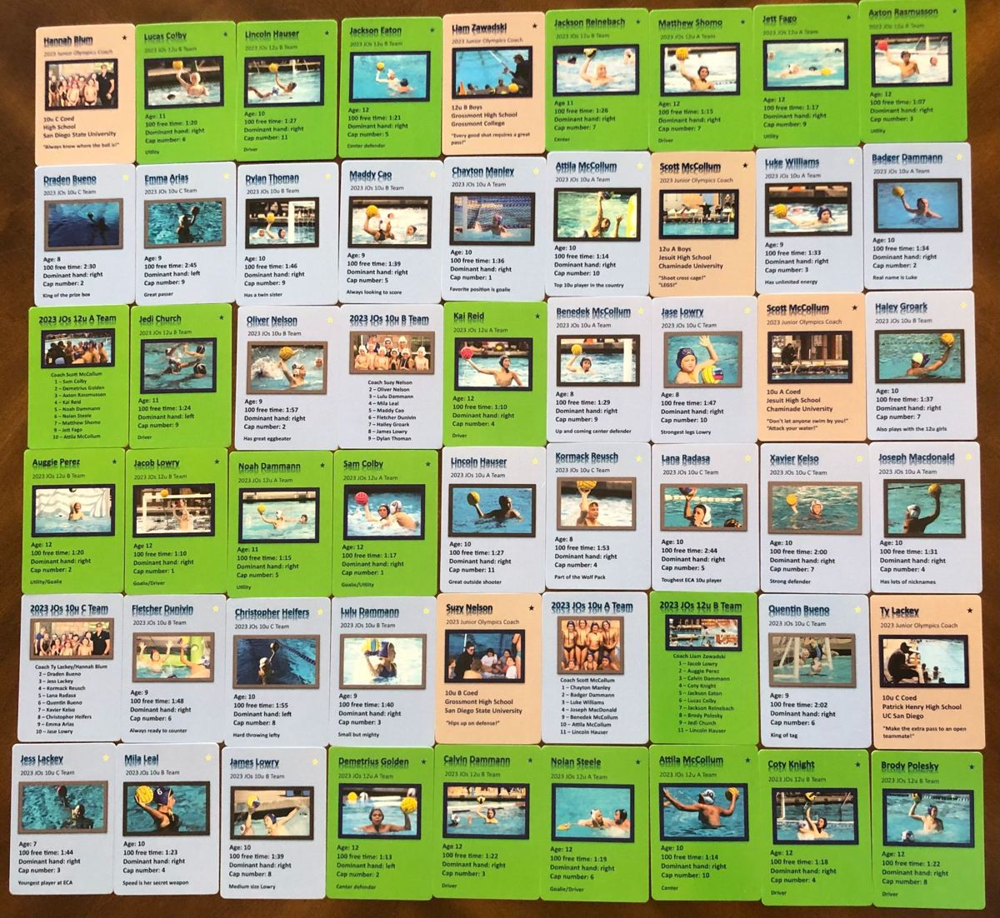

We are proud of our athletes' accomplishments in and out of the pool. Here we showcase water polo related projects done by ECA athletes.
ECA 10U brothers, Attila and Benedek, were very disappointed when they found out that there are no trading cards for water polo players. They took matters into their own hands and decided to create some for the 5 ECA Junior Olympics teams.
They planned, designed, collected data, gathered pictures, and used their own money to get the cards printed. The end result was 54 shiny cards: one of each athlete, 5 team cards, and 6 coaches cards. Great job, boys! Way to be creative and get things done!



Check out ECA athlete Jayden Tolliver interviewing Max Irving from the USA National Team for Black History Month. Awesome questions by Jayden and great insights from Max!
In celebration of Black History Month, Jayden was given the opportunity to do a project on an inspirational African American. He chose Max Irving, from the USA Men's National Water Polo Team. Jayden not only looks up to Max because he is an awesome professional water polo player and an Olympian, but because he is someone that looks like Jayden and someone that Jayden can identify with. Max gives him the motivation and encouragement that he deserves to be in the pool playing this sport just as much as anyone else! It was a dream come true to spend time getting to know Max and will be something that Jayden will treasure forever.
Thank you, Max! And great job, Jayden!